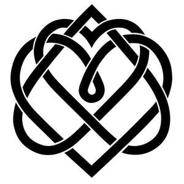

Trade Mark Journal No.2025/014 4 April 2025
UK00004176595 20 March 2025 (9,14,16,25,35,41)

- Class 9
- Education software; Media content; Digital music downloadable from the Internet; Downloadable digital music; Digital books downloadable from the Internet; Digital data recording media; Digital media streaming devices; Digital recording media; Downloadable digital photos; Digital audio servers; Digital storage media; Downloadable digital assets; Digital video servers; Digital music downloadable provided from the internet; Content access software; Digital recordings; Digital video discs; Computer application software for streaming audio-visual media content via the internet; Software for processing digital images; Audio digital discs; Digital signage; Content control software; Digital music downloadable provided from MP3 internet websites; Computer software for the display of digital media; Web content management [WCM] software; Digital music downloadable provided from MP3 internet web sites; Downloadable digital music provided from MP3 Internet web sites; Digital music downloadable provided from a computer database or the internet; Blank digital storage media; Digital audio players; Blank digital recording media; Digital video players; Content management software; Digital music [downloadable] provided from mp3 web sites on the internet; Digital dashboard software; Digital video discs [DVDs]; Digital tablets; Wireless communication devices for the transmission of multimedia content; Digital video recorders; Digital televisions; Recorded content; Analogue to digital converters; Digital to analogue converters; DMB (Digital Multimedia Broadcasting) televisions; Digital audio recorders; Digital audio tapes; Audio digital tapes; Digital phones; Covers for digital media players; Digital audio interface apparatus; Computer software for processing digital images; Digital video cameras; Computer digital maps; Devices for streaming media content over local wireless networks; Downloadable computer software for use as a digital wallet; Software for Digital Distributed Storage; Digital cameras.
- Class 14
- Jewelry; Jewellery; Trinkets [jewellery, jewelry (Am.)]; Necklaces [jewelry]; Brooches [jewelry]; Jewelry brooches; Brooches being jewelry; Necklaces [jewellery, jewelry (Am.)]; Necklaces [jewellery]; Ornaments [jewellery, jewelry (Am.)]; Bracelets [jewellery, jewelry (Am.)]; Brooches [jewellery, jewelry (Am.)]; Pearls [jewellery, jewelry (Am.)]; Trinkets [jewelry]; Jewelry (Paste -) [costume jewelry]; Paste jewelry [costume jewelry]; Trinkets [jewellery]; Bracelets [jewelry]; Amulets [jewellery, jewelry (Am.)]; Bracelets [jewellery]; Charms [jewellery, jewelry (Am.)]; Chains [jewellery, jewelry (Am.)]; Jewelry stickpins; Pearls [jewelry]; Medallions [jewellery, jewelry (Am.)]; Ornaments [jewellery]; Rings [jewellery, jewelry (Am.)]; Pins [jewellery, jewelry (Am.)]; Pendants [jewelry]; Cloisonné jewellery [jewelry (Am.)]; Brooches [jewellery]; Jewellery brooches; Lockets [jewellery, jewelry (Am.)]; Jewellery, including imitation jewellery and plastic jewellery; Paste jewellery [costume jewelry (Am.)]; Paste jewellery [costume jewelry [Am.]]; Pendants [jewellery]; Amulets [jewelry]; Jewelry hatpins; Gold thread [jewellery, jewelry (Am.)]; Silver thread [jewellery, jewelry (Am.)]; Costume jewelry; Pearls [jewellery]; Charms [jewelry]; Jewelry charms; Charms for jewelry; Diamond jewelry; Costume jewellery; Lockets [jewelry]; Gold jewellery; Clasps for jewelry; Amulets being jewellery; Amulets [jewellery]; Wristlets [jewellery]; Wire of precious metal [jewellery, jewelry (Am.)]; Charms [jewellery]; Charms for jewellery; Jewellery charms; Rings [jewelry]; Jade [jewellery]; Jewellery chain of precious metal for necklaces; Threads of precious metal [jewellery, jewelry (Am.)]; Decorative brooches [jewellery]; Items of jewellery; Jewellery items; Plastic costume jewellery; Shoe jewelry; Fashion jewellery; Rings being jewellery; Rings [jewellery]; Jewellry; Lockets [jewellery]; Ivory jewelry; Jewelry chains; Chains [jewelry]; Cloisonne jewellery; Platinum jewelry; Clasps for jewellery; Jewellery chain of precious metal for bracelets; Agate as jewellery; Jewelry caskets; Shoe jewellery; Pins being jewelry; Pins [jewelry]; Amber pendants being jewellery; Jewellery caskets; Cloisonné jewelry; Hat jewelry; Gold plated brooches [jewellery]; Pewter jewellery; Jewellery chain of precious metal for anklets; Imitation jewellery ornaments; Cameos [jewelry]; Crucifixes as jewellery; Amberoid pendants being jewellery; Jewellery stones; Precious jewellery; Jewelry boxes; Hat jewellery; Beads for making jewelry; Imitation jewelry; Fake jewellery; Jewellery chains; Chains [jewellery]; Jewellery in semi-precious metals; Ivory jewellery; Rhinestones for making jewelry; Plastic bracelets in the nature of jewelry; Identification bracelets of precious metal [jewelry]; Pins [jewellery]; Pins being jewellery; Leather jewelry boxes; Cabochons for making jewelry; Clips of silver [jewellery]; Jewellery for personal adornment; Cloisonné jewellery; Identification bracelets [jewelry]; Beads for making jewellery; Scarf clips being jewelry; Jewellery chain; Jewellery boxes; Jewelry boxes of metal; Bracelets made of embroidered textile [jewelry]; Jewellery rope chain for necklaces; Jewellery made from gold; Jewellery made from silver; Jewellery in non-precious metals; Cabochons for making jewellery; Dress ornaments in the nature of jewellery; Silver thread [jewelry]; Gold thread jewelry; Gold thread [jewelry].
- Class 16
- Printed books; Printed music books; Printed periodicals; Magazines; Magazines [periodicals]; Printed publications; Publications (Printed -); Books; Annuals [printed publications]; Wirebound books; Printed periodicals in the field of movies; Printed booklets; Printed periodical publications; Comic magazines; Copy books; Printed pamphlets; Jackets of paper for books; Periodical magazines; Printed brochures; Printed periodicals in the field of music; Pocket books [stationery]; Music magazines; Printed manuals; Binding materials for books and papers; Covers for books; Covering materials for books; Poster magazines; Printed publications relating to computers; Ledgers [books]; Printed newsletters; Magazine supplements for newspapers; Printed stationery; Comic books; Printed books in the field of music education; Sticker books; Scrap books; Poster books; Music books; Blank journal books; Manuscript books; Autograph books; Coupon books; Computer magazines; Covers for cheque books; Colouring books; Coloring books; Non-fiction books; Cookery books; Flip books; Baby books [storybooks]; Photographs [printed]; Printed photographs; Printed lectures; Commemorative books; Printed periodicals in the field of tourism; Printed music; Writing books; Ledger books; Printed advertisements; Inflight magazines; Printed coupons; Printed guides; Travel magazines; Graphic art books; Printed calendars; Index books; Drawing books; Paper for wrapping books; Printed periodicals in the field of plays; Printed paper labels; Cheque books; Printed curricula; Printed flyers; Wedding books; Periodicals; Printed leaflets; Printed periodicals in the field of dance; Pop-up books; Printed advertising boards of paper; Printed programmes; Fiction books; Printed horoscopes.
- Class 25
- Clothing; Clothes; Knitted clothing; Embroidered clothing; Wristbands [clothing]; Belts for clothing; Waterproof clothing; Rainproof clothing; Casual clothing; Infant clothing; Leisure clothing; Clothing for sports; Sports clothing; Weatherproof clothing; Dance clothing; Printed t-shirts.
- Class 35
- Career advisory services (other than education and training advice); Business marketing consultancy; Business marketing services; Business marketing consulting services; Marketing; Promotion [advertising] of business; Business marketing consultation services; Advice in the field of business management and marketing; Business promotion; Commercial business management; Business strategy services; Business management; Marketing consulting; Business consultancy; Business consulting; Financial marketing; Advertising and marketing consultancy; Business advice relating to marketing; Marketing (Business advice relating to -); Advertising and marketing; Business planning and business continuity consulting; Business networking; Marketing consultancy; Business management advice relating to manufacturing business; Business advice relating to strategic marketing; Providing business marketing information; Consultancy regarding business organisation and business economics; Consultancy relating to business advertising; Advertising and marketing services; Strategic business consultancy; Business promotion services; Business management and consulting; Business management consulting; Business management and consultancy; Business management consultancy; Marketing services; Product marketing; Business consulting for enterprises; Providing advice in the field of business management and marketing; Business advertising services relating to franchising; Business strategy development services; Business strategy and planning services; Business research; Research (Business -); Business management and enterprise organization consultancy; Business organization consultancy; Business planning; Information or enquiries on business and marketing; Business management services; Business planning consultancy; Business organization consulting; Developing promotional campaigns for business; Business management and organization consultancy; Advertising, marketing and promotion services; Marketing, advertising and promotion services; Business networking services; Business organization and management consulting; Consultancy (Professional business -); Professional business consultancy; Business consultancy (Professional -); Advisory services relating to business management and business operations; Business management of retail outlets; Business administration consultancy; Influencer marketing; Business consultancy services relating to the marketing of fund raising campaigns; Business organisation consulting; Business recruitment consultancy; Business consulting services; Business management for shops; Online marketing; Business process management consultancy; Business management consultancy in the field of corporate travel; Business management and consulting services; Business management consulting services; Business organisation and management consulting; Business research for new businesses; Business research consulting; Business planning services for enterprises; Business planning services; Business management for a trade company and for a service company; Business management and consultancy services; Business management consultancy services; Advertising, marketing and promotional services; Advertising, promotional and marketing services; Marketing, advertising, and promotional services; On-line advertising and marketing services; Business acquisitions; Business management planning; Business research services; Business process management and consulting; Business consultancy services; Consulting services in business organization and management; Business management organisation; Business management and organization consultancy services; Business and market research; Commercial assistance in business management; Marketing agency services; Digital marketing; Business advice relating to marketing management consultations; Internet marketing; Business management of entertainers; Online business networking services; Affiliate marketing; Business management of restaurants; Business strategic planning services; Business organization and operation consultancy; Professional business consulting; Business management consultancy via the Internet; Business management of theaters; Business auditing; Outsourcing services in the field of business analytics; Marketing forecasting; Assistance in franchised commercial business management; Business organisation and management consulting services; Business consultancy to firms; Business project management; Business process management; Business project management services; Direct marketing consulting; Business organisation; Business management of hotels; Marketing research services; Hotels (Business management of -); Business accounts management; Business merchandising display services; Marketing research; Creative marketing plan development services; Business expertise; Consultancy services in the field of affiliate marketing; Acquisitions (Business -) consulting services; Business management assistance for industrial or commercial companies; Business advisory services relating to business liquidations; Promotional marketing; Business management advice; Assistance to commercial enterprises in the management of their business; Business invoicing services; Business management and organisation consultancy; Business management organisation consultancy; Business organisation and management consultancy; Consultancy services relating to advertising, publicity and marketing; Trade marketing [other than selling]; Business consulting services for digital transformation; Business administration.
- Class 41
- Education; Vocational education; Health education; Pre-school education; Education and training; Academies [education]; Education and instruction; Services of schools [education]; Education services; University education services; Academy services (Education -); Education academy services; Academy education services; Education, teaching and training; Vocational education and training services; Religious education; Education (Religious -); Music education; Education and training services; Education and instruction services; Training and education services; Education examination; Kindergarten services [education or entertainment]; Educational services for providing courses of education; Provision of education courses; Career counseling [education]; Teaching of diet education; Higher education services; Provision of training and education; Provision of education and training; Providing of education; Physical education; Entertainment, education and instruction services; Education information; Education services relating to vocational training; Primary education services; Adult education services; Residential education courses; Linguistic education and training services; Education and training consultancy; Primary education services relating to literacy; Further education; Physical education instruction; Education academy services for teaching acting; Vocational education relating to self-defence; Sports education services; Physical education services; Vocational education relating to home safety; Physical health education; Musical education services; Legal education services; Technological education services; Online education services; Education services related to the arts; Education services relating to nutrition; Education services relating to health; Providing continuing dental education courses; Career counselling relating to education and training; Research in the field of education; Sporting education services; Education, entertainment and sport services; Education services relating to business training; Education courses relating to the travel industry; Educational and teaching services; Training or education services in the field of life coaching; Providing continuing legal education courses; Adult education services relating to law; Education in the field of computing; Education services relating to yoga; Adult education services relating to commerce; Education services in the nature of courses at the university level; Adult education services relating to banking; Education in movement awareness; Adult education services relating to management; Education services relating to the cinema; Education services relating to fashion; Education services relating to photography; Education services relating to sports; Education services relating to banking; Educational and training services relating to healthcare; Providing education courses relating to the travel industry; Education services relating to food technology; Education and training in the field of automotive engineering; Adult education services relating to accounting; Health and wellness training.
Quantum Heart Productions Ltd.